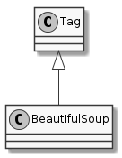

The bs4.BeautifulSoup class is the main class that you work with. It is a child of the bs4.element.Tag class. It is typically instantiated by passing in a string of HTML to the constructor.
response = requests.get(URL)
soup = BeautifulSoup(response.text)

BeautifulSoup([markup, features, builder, …]) |
This class defines the basic interface called by the tree builders. |